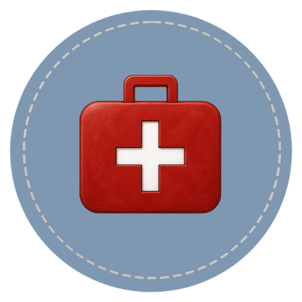

Learn how to recognize common injuries and emergencies, take basic vital signs, use a horse first aid kit, and know when to call a veterinarian. This course introduces the essential first aid skills every horse handler should understand to help keep horses safe and healthy. Topics include cuts and wounds, swelling, lameness, vital signs, emergency preparedness, and the first steps to take when a horse is injured or showing signs of illness. The goal is not to replace veterinary care, but to help handlers stay calm, make safe decisions, and provide appropriate care until professional help arrives.

Course Curriculum
Each lesson builds the practical knowledge behind equine first aid — from the handler's role in an emergency, to first aid kit contents, to recognizing which situations require immediate veterinary contact.
Every lesson is built for self-paced learning with Horse Bowl integration and real barn application throughout.
Start the Course
The most important time to learn first aid is before it is needed. Start here to understand the handler's role, what preparation looks like, and why equine first aid knowledge saves horses.
Start the Course